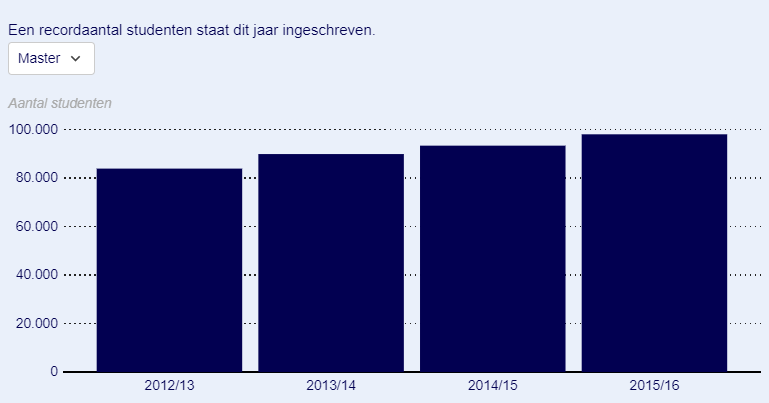

2018/sept/15
algemeen nieuws binnenland
Nog nooit studeerden zo veel mensen aan de Nederlandse universiteiten. Dit collegejaar staan 258.054 studenten ingeschreven aan een universiteit.
Dat is een nieuw record. Het aantal hbo-studenten is juist licht gedaald naar 442.598.
Daarmee lijkt een einde gekomen te zijn aan de forse groei van de afgelopen jaren
, concludeert de Vereniging Hogescholen maandag.
De toename aan de universiteiten komt vooral door buitenlandse studenten.
Het aantal nieuwkomers uit andere landen steeg in een jaar tijd van 12.681 naar 15.160, een toename van bijna 20 procent.
In totaal studeren er nu 36.711 buitenlanders in Nederland. Ze komen vooral uit Duitsland, China, Italië, Griekenland en Groot-Brittannië.
Eerstejaars
Het aantal eerstejaars daalde juist. De hbo's verwelkomden 93.918 nieuwe studenten, 8,3 procent minder dan vorig jaar.
De universiteiten zagen een daling van 0,9 procent, van 44.271 naar 43.876.
Volgens de universiteiten en de hbo's komt de terugloop door de invoering van het leenstelsel. Sinds de zomer is de studiefinanciering geen gift meer,
maar een lening die moet worden terugbetaald. Om dat voor te zijn,
gingen scholieren in de afgelopen jaren meteen van de middelbare school naar de universiteit of hogeschool.
Daardoor was de instroom in de afgelopen twee jaar hoger dan gemiddeld
,
laat voorzitter Thom de Graaf van de hogescholen weten. Nu is het aantal nieuwe inschrijvingen op het oude niveau.
Studenten
Populairste studies
De populairste universitaire studies zijn Rechtsgeleerdheid, (bijna 14.000 studenten), Psychologie (ruim 12.000) en Geneeskunde (bijna 9500).
Ook opleidingen waar studenten vakken van meerdere richtingen volgen, zijn in trek.
Zulke sectoroverstijgende
studies zijn vooral te vinden bij de University Colleges. Zij zagen het aantal studenten in een jaar tijd met ruim 13 procent stijgen.
Sinds het jaar 2012/2013 is het aantal zelfs bijna verdubbeld.
Het aantal eerstejaars Pabo-studenten daalde met 32 procent door de invoering van toelatingstoetsen.
De kwaliteit van de instromende studenten wordt hiermee verhoogd,
waardoor de verwachting is dat er minder studenten uitvallen in het eerste studiejaar en de kwaliteit voor de klas wordt bevorderd
, aldus de hogescholen.